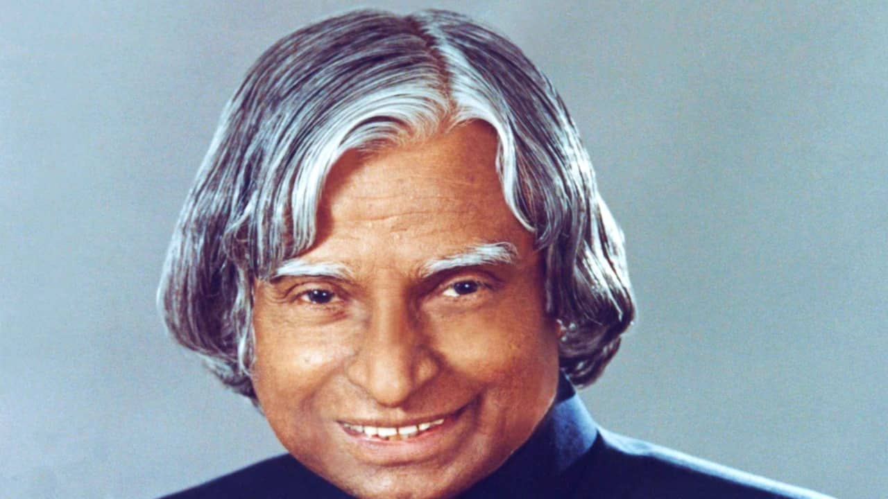

Dr A.P.J Abdul Kalam
The Missile Man
1931-2015

Biography
⮞ A.P.J. Abdul Kalam, in full Avul Pakir Jainulabdeen Abdul Kalam,
(born October 15, 1931, Rameswaram,India—died July 27,
2015, Shillong), Indian scientist and politicianwho
played a leading role in the development of India’s missile and nuclear
weapons programs.He was president of India from 2002 to 2007.
Kalam earned a degree in aeronautical engineering from the Madras Institute of Technology
and in 1958 joined the Defence Research and Development Organisation (DRDO).
In 1969 he moved to the Indian Space Research Organisation,
where he was project director of the SLV-III,
the first satellite launch vehicle that was both designed and produced in India.
Rejoining DRDO in 1982,Kalam planned the program that produced a number of successful missiles,
which helped earn him the nickname “Missile Man.”
Among those successes was Agni, India’s first intermediate-range ballistic missile,
which incorporated aspects of the SLV-III and was launched in 1989.
Made by Pratyush Pritam